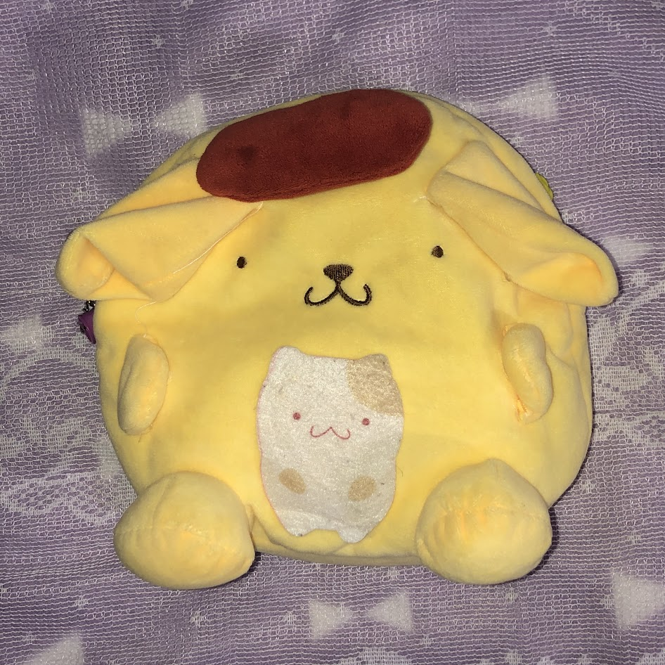

~ CREATURE DATA ~
~ CREATURE DATA ~

Viktor Von Vamp (The Vampire)
Birthplace : Transylvania.
Species: Undead
Age: 42 and a half (has been this age for a long time)
POWERS: Somehow is able to endear many people.
first appeared during festive Dec 2023.
Viktor is an elite Neet, a loner and hopeless romantic! Fujo. Deadly combination. He is rotund and rubicund, somehow spawning in blushing cheeks even while undead. Viktor is often tossed to very high heights and is at a high risk for hitting ceilings.

Jelly Christ
Species: Resembles Rat Mouse
Birthplace : Realm Unknown to Mankind
Personality: Holy
POWERS: Reality warping
first appeared during festive Dec 2023.
How stylish!!!!!!!
Periwinkle
Species: Resembles bear.
Birthplace: Wuhan, China
POWERS: Influences time, space, and luck
first appeared during festive Dec 2023
Great unknown power lies behind the embroidered sheen of its eyes
Hole
Species: Whale Shark Rhincodon typus
Birthplace: Kaiyukan
POWERS: Mass consumption
first appeared Jan 2024
Often seen with MissFish & other marine beings. So very, very, blue.
POM

Species: takes the appearance of a gelatinous dog-like form
POWERS: Massive inventory storage
Personality: deceiving, unfeeling, inanimate, content
first appeared during festive Dec 2023
There is little to no light in Pom’s eyes!
Pickles The Frog (Clover)
Species: Anthropomorphic frog
Gender: secret
favorite food is "juicy pickles"
one cucumber in height and two cucumbers in weight.
Born: 1 June 1994
We first crossed paths in Mar 2024
Spanning pastoral grassy fields. . . clover encased in dew drop . . . that is this pickles
Yolk Miffy
Species: Egg
Origin: Jul 2024
Likes: Tomato
Fate has Cursed her to be separate from her soulmate.
Bear.
Predates my existence
POWERS: Omnipresent being
Bear does not need a name other than bear, because Bear is the quintessential bear.
Ladybug Polkadot
Origin: sometime somewhere in 2011
A crimson star in the sky.
Anvil Penguin
Powers: very notable and strong MASS
Attacks: deadly bodyslam
Mass: 1.3 kilograms
Jelly Bear
Powers: assumes non-newtonian textures
Is a state of matter yet to be discovered.
MorganaBear
Likes: riding trains , fancy feasts
A chic bear with dreams of the big city.
Hmmmmmnmm-Hmmmm-Disease
Sometimes likes to dance. Sometimes does not.
Materialized October 2024
Disease” lives between the realms of life and death.
Its rigor mortis flesh is solid as can be, but it dances with just as much gallant gusto as anyone else.
Even though Disease may not look exactly like other dolls,
it still deserves a uniquely elegant and glamorous dollhouse of its own to dwell in.